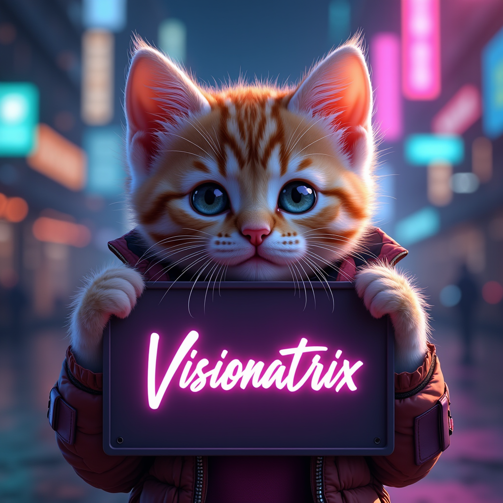

Flux 1
FLUX.1 is a 12 billion parameter rectified flow transformer capable of generating images from text descriptions. For more information, please read blog post.
The model is extremely demanding on hardware.
Even on 24 Gigabytes, the speed of the model in the full version leaves much to be desired, since this basic flow does not fit completely into the video card cache.
Lightning versions are quite good and generate quite good pictures in 4 steps.
Note
Totally with with model there are 4 different flows: Flux, Flux (Small), Flux Lighting, Flux Lighting (Small)
Supports various aspect ratios.
Supports different number of steps for non-Lighting versions.
Hardware
Required memory: 12 GB for Small versions, 24 GB for usual
Time to generate 1 image with default Flux:
AMD 7900 XTX: 86 sec (25 steps) / 152 sec (50 steps)
Apple M2 Max: XX sec
Time to generate 1 image with default Flux Lighting (Small):
AMD 7900 XTX: 8 sec
NVIDIA RTX 3060 (12 GB): XX sec
Apple M2 Max: XX sec
Flux Small Example

Prompt: “photo-realistic portrait of a cute kitten in cyberpunk style holding sign “Visionatrix” in ultra quality with high details”
Flux Lighting Example
Prompt: “A cool man is driving a luxury car through a night city. The scene captures the vibrant nightlife with glowing neon signs, tall skyscrapers, and bustling streets. The dad is stylishly dressed, exuding confidence and charisma. The luxury car, sleek and modern, reflects the city lights, enhancing the atmosphere of urban sophistication and adventure.”
Flux Example (50 steps)
Prompt: “Portrait of beautiful woman in a swimsuit is lounging under a palm tree on a tropical beach. The scene is photorealistic, capturing the serene and picturesque setting with clear blue skies, gentle waves, and white sandy shores. The palm tree provides shade, and the overall atmosphere is one of leisure and tropical paradise.”